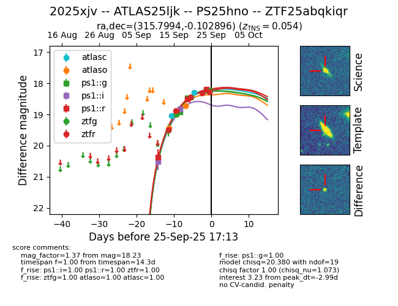
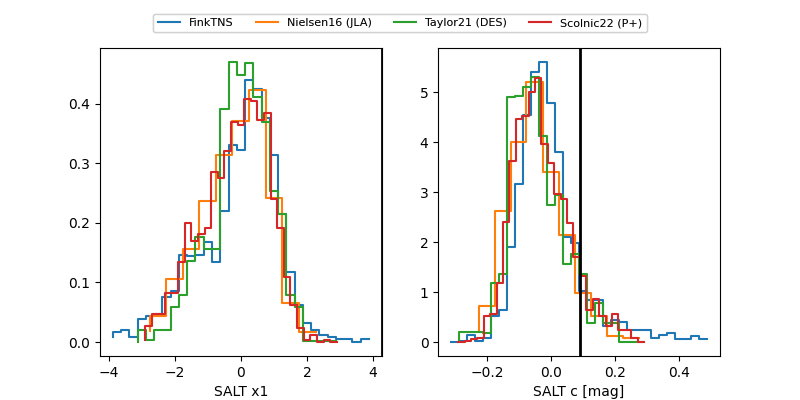

FINK: ZTF25abqkiqr
Lasair: ZTF25abqkiqr
ALeRCE: ZTF25abqkiqr
TNS: 2025xjv
YSE: 2025xjv
ZTF25abqkiqr (ztf,fink)
2025xjv (tns,yse)
ATLAS25ljk (atlas)
PS25hno (panstarrs)
equatorial (ra, dec) = (315.7994,-0.10290)
galactic (l, b) = (49.2908,-28.99661)


last atlasc=18.28, atlaso=18.73, ps1::g=18.24, ps1::i=18.82, ps1::r=18.20, ztfg=18.23, ztfr=18.27
2 atlasc, 2 atlaso, 4 ps1::g, 2 ps1::i, 4 ps1::r, 4 ztfg, 5 ztfr detections